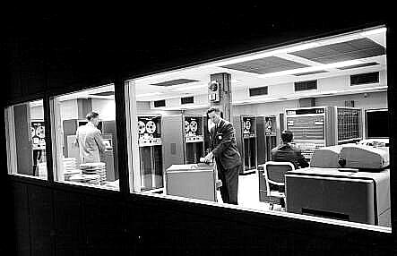
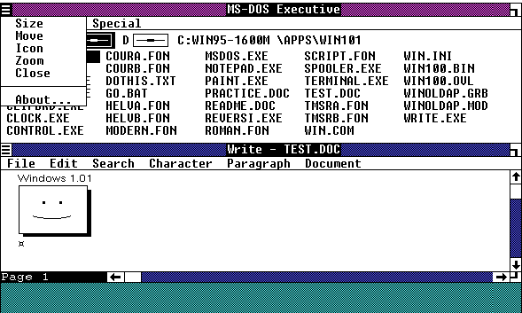
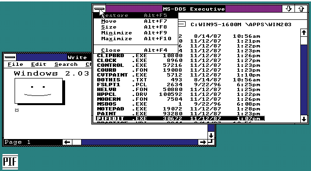

The History of OS Development
In this page, we are going to look at operating systems in a different way. We will go back in time to look at the history of operating systems. You will find there are many similarities between these vintage operating systems. These similarities will then be classified into the basic features operating systems have in common; which will also be a part of you own OS.
Most of todays operating systems are graphical. These graphical user interfaces (GUI), however, provide a large abstraction layer to what is really going on in an OS.
Many operating systems concepts date back to when programs were written on tape. A lot of these concepts are still in play today.
Prehistory - The Need for Operating Systems
Prior to the 1950s, all programs were on punch cards. These punch cards represented a form of instructions, which would control every faucet of the computer hardware. Each piece of software would have full control of the system. Most of the time, the software would be completely different with each other. Even the versions of a program.
The problem was that each program was completely different. They had to always be rewritten from scratch. There was no common support for the software, so the software had to communicate directly with the hardware. This also made portability and compatibility impossible.
During the realm of Mainframe computers, creating code libraries became more feasible. While it did fix some problems, such as two versions of software being completely different, each software still had full control of hardware.
If new hardware came out, the software will not work. If the software crashed, it would need to be debugged using light switches from a control panel.
The idea of an interface between hardware and programs came during the Mainframe era. By having an abstraction layer to the hardware, programs will no longer need to have full control, but instead they all would use a single common interface to the hardware.
What is this ultra cool interface? Why, its that sweet cuddly (sometimes nasty) thing we call an Operating System! 😀
1950s
The first real operating system recorded, according to Wikipedia, is the GM-NAA I/O. The SHARE Operating System was a successor of the GM-NAA I/O. SHARE provided sharing programs, managed buffers, and was the first OS to allow the execution of programs written in Assembly Language. SHARE became the standard OS for IBM computers in the late 1950s.

The SHARE Operating System (SOS) was the first OS to manage buffers, provide program sharing, and allow execution of assembly language programs.
"Managing Buffers" relate to a form of "Managing Memory". "Program Sharing" relates to using libraries from different programs.
The two important things to note here are that, since the beginning of time (Not really 😂), Operating Systems have been responsible for Memory Management and Program Execution/Management
Because this isn't the history of the world (nor that of computers) that I am narrating, lets jump ahead to the good old DOS.
1964 - DOS/360 and OS/360
DOS/360 (or just "DOS") was a Disk Operating System was originally announced by IBM to be released on the last day of 1964. Do to some problems, IBM was forced to ship DOS/360 with 3 versions, each released June 1966.
The versions were:
- BOS/360 - 8KB Configuration.
- DOS/360 - 16KB Configuration with disk.
- TOS/360 - 16KB Configuration with tape.
A couple of important things to note is that DOS/360 offered no Multitasking, and no Memory Protection. The OS/360 was being developed about the same time by IBM. The OS/360 used "OS/MFT" (Multiple Fixed Transactions) to support multiple programs, with a Fixed Base Address. With OS/MVT (Multiple Variable Transaction), it can support varies program sizes.
Now we have a few more interesting words - Multitasking, Memory Protection, and Fixed Base Address. Adding to before, we also have Program execution and Memory Management.
1969 - Unix comes along
The Unix Operating System was originally written in C. Both C and Unix were originally created by AT&T. Unix and C were freely distributed to government and academic institutions, causing it to be ported to a wider variety of machine families then any other OS.
Unix is a multiuser, Multitasking Operating System.
Unix includes a Kernel, File System and a Command Shell. There are a lot of Graphical User Interfaces (GUI) that uses the Command Shell to interact with the OS, and provide a much friendlier and nicer look.
1982 - Commodore DOS

Commodore DOS (CBM DOS) was used with Commodore's 8 bit computers. Unlike the other computers before or since-which booted from disk into the systems memory at startup, CBM DOS executed internally within the drive-internal ROM chips, and was executed by an MOS 6502 CPU.
1985 - Microsoft Windows 1.0

The first Windows was a DOS application. Its "MSDOS Executive" program allows the running of a program. None of the "Windows" could overlap, however, so each "window" was displayed side to side. It was not very popular.
1987 - Microsoft Windows 2.0

The second version of Windows was still a DOS Graphical Shell, but supported overlapping windows, and more colors. However, do to the limitation of DOS, it was not widely used.
Note
DOS is a 16 bit operating system. During this time frame, DOS had to reference memory through Linear Addressing, and disks through LBA (Linear Block Addressing). Because the x86 platform is backward compatible, When the PC boots it is in 16 bit mode (Real Mode), and still has LBA. More on this later.
Due to 16 bit mode limitations, DOS could not access more then 1 MB of memory. This is solved, today, by enabling the 20th address line through the Keyboard Controller. We will go over this later.
Because of this 1 MB limitation, Windows was far to slow, which was one primary reason of it being unpopular.
1987 - Microsoft Windows 3.0

Windows 2.0 was completely redesigned. Windows 3.0 was still a DOS Graphical Shell, however it included A "DOS Extender" to allow access to 16 MB of memory, over the 1 MB limit of DOS. It is supports multitasking with DOS programs.
This is the Windows that made Microsoft big. It supports resizable windows, and movable windows.
Windows in relation to OS Developers
I have seen quite a few beginning OS developers want to develop the next Windows. While it is possible, it is extremely difficult, and is impossible with a one person team. Take a look at the above picture again. Remember that it is a graphical shell over a command shell, being executed by a Kernel. Also, remember that even Windows had to start here. The Command Shell was DOS. the Graphical Shell was "Windows".
In the next page, we will consolidate all the features these OSes share to help define what an OS consists of.